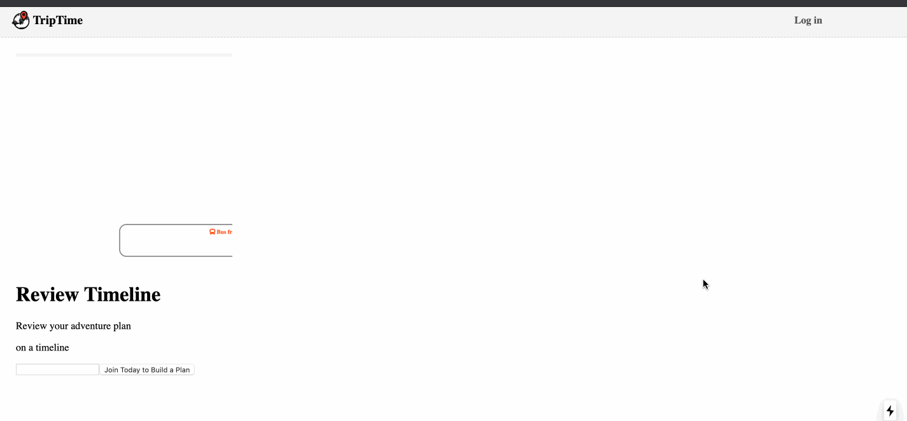

Today I used the Scroll Snap module of CSS when developing the landing page of TripTime. It’s a handy eye candy:)
The full reference for the CSS Scroll Snap can be find here.
I created a snap-scroll.module.css file to contain the snap-scroll-related CSS rules, for vertical scroll snap:
1 | /* TripTime/src/spa/css/snap-scroll.module.css */ |
Parent property: scroll-snap-type
scroll-snap-type: mandatory means as long as you scroll the container, the viewport of the scroll container will move on to the next snap point.
By contrast, if you use proximity, the scroll container will rest at the closest snap point, and you will get sent back to your current snap point if you scroll but don’t scroll close enough to the next scroll point.
Children property: scroll-snap-align
The value could be none, start, end or center.
With none, you are saying the current element does not contain a snap point.
With other options, you add a snap position in the corresponding axis, and the scroll container could rest on the specified point.
The child doesn’t have to take up the whole container viewport
The site info component does not take up the whole space, but it can also be a snap point by having the scroll-snap-align rule:
1 | .info-container { |
If this is the last child of the scroll container, when the scroll container reaches the end, it will rest at the position where the info-container takes up the bottom space.